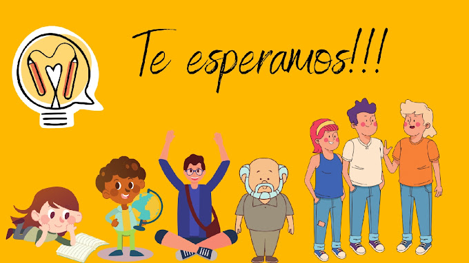

El equipo multidisciplinario está conformado por profesionales con
experiencia en el abordaje de problemas psicosociales como: violencia
intrafamiliar, conflicto armado, acoso escolar, enfermedades crónicas y
terminales, duelo, divorcio, estrés laboral, maltrato infantil,
adicciones, desastres naturales y abandono del adulto mayor.

En su implementación, la fundación trabaja de la mano con Secretarías de
la Mujer, Comisarias de Familia, Alcaldías Locales, ONGs, Comunidades
Educativas, Fondos de Empleados, entre otros. Brindando capacitación,
acompañamiento e intervención terapéutica a hombres y mujeres; acorde a
las necesidades de la etapa del ciclo vital (niños, niñas, adolescentes
y adultos) y los roles que desempeñe. Al ser un enfoque integral,
trabaja con personas, familias, grupos o comunidades en el apoyo de la
construcción o reconstrucción de situaciones de bienestar que generen
felicidad y por ende el alcance de la paz.